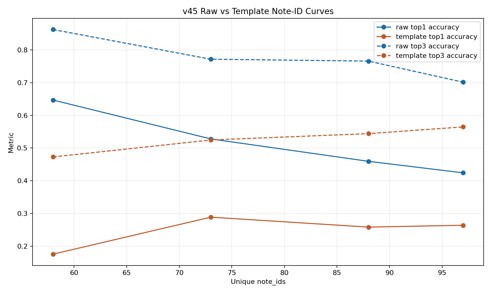

A contract-based study of whether recursive grammatical structure improves note selection, and how raw versus templated note inventories behave as the number of unique note classes grows
This report evaluates a core claim of the ELA framework: a sentence can be represented as a hierarchy of Recursive Linguistic Elements (RLE), where each node preserves abstract grammatical information rather than lexical identity, and this representation is useful for downstream generalisation. We test this claim through the task of pedagogical note selection. First, we compare a shallow sentence-template classifier against a classifier that receives a richer RLE-derived contract. The richer structural input improves held-out performance from Top-1 = 0.3519 and Top-3 = 0.6037 to Top-1 = 0.3928 and Top-3 = 0.7700. Second, we study how note selection changes as the number of unique note classes grows, comparing raw note labels against templated note labels with placeholders. Raw notes achieve higher absolute accuracy in the tested range, but templated notes show the more favorable dynamic trend as note inventory increases. The results are consistent with the ELA hypothesis, while also indicating that a much larger note inventory will be required for a decisive large-scale study.
The starting point of this work is the thesis claim that natural language is not best represented as a flat stream of words. Instead, each sentence can be decomposed into a recursive hierarchy of linguistic units: sentence, phrase, and word nodes. In the ELA framework, these Recursive Linguistic Elements carry structural attributes such as node type, syntactic role, and tense/aspect/mood, while remaining abstract with respect to concrete lexical identity.
The practical consequence is strong: if the model learns the grammar of structural patterns rather than memorising surface forms, it should generalise to previously unseen vocabulary that instantiates the same grammatical configuration. That is the central idea tested in this report.
The prediction task studied here is:
RLE contract input -> note_id
A note_id is a canonical class label pointing to one pedagogical linguistic note. The note text may be
either raw natural language or a templated notation containing placeholders such as {{SUBJECT}} or
{{IF_CLAUSE}}.
Two ranking metrics are used throughout the report:
note_id is ranked first.note_id appears anywhere among the first three ranked candidates.Top-1 is therefore the strict measure of exact note selection, while Top-3 indicates whether the correct pedagogical note remains available among the classifier's best immediate hypotheses.
The first experiment uses a sentence-level dataset in which the input is a serialized RLE contract
(contract_template_v2) and the target is a raw pedagogical note. This dataset contains 3875 rows after
balancing and 58 unique raw note targets.
The note-dynamics experiment uses a larger mixed source pool with 5016 rows, including 3545 templated targets and 1471 raw targets. This pool is then separated into raw and templated note-id experiments so that both curves can be compared on shared note-cardinality checkpoints.
Three dataset formats are directly relevant to the thesis:
The first experiment compares two input conditions for note classification:
The classifier architecture remains tabular in both cases. This is important: any gain can therefore be attributed primarily to the representation, not to a larger neural encoder.
| Input condition | Top-1 | Top-3 | Unique note_ids |
|---|---|---|---|
| Shallow sentence-template input | 0.3519 | 0.6037 | 268 |
| RLE contract input | 0.3928 | 0.7700 | 58 |
The second experiment studies how note selection changes as the number of unique note classes grows. Two target regimes are compared on the same source pool:
Shared note-cardinality checkpoints were constructed at 58, 73, 88, and 97 unique note_ids.

| Target type | Unique note_ids | Top-1 | Top-3 |
|---|---|---|---|
| Raw | 58 | 0.6467 | 0.8623 |
| Raw | 73 | 0.5279 | 0.7716 |
| Raw | 88 | 0.4595 | 0.7658 |
| Raw | 97 | 0.4242 | 0.7013 |
| Templated | 58 | 0.1757 | 0.4728 |
| Templated | 73 | 0.2887 | 0.5246 |
| Templated | 88 | 0.2584 | 0.5441 |
| Templated | 97 | 0.2640 | 0.5646 |
The current evidence suggests that templated notes do not underperform because they are underrepresented. In the 58-note setting, they actually have higher average class support than raw notes. Their difficulty is instead linked to class separability.
This means that templating introduces abstraction, but also makes the label space semantically crowded. In other words, abstraction is beneficial only when the downstream class inventory is large and clean enough for that abstraction to become discriminative rather than ambiguous.
The following examples show the actual pipeline:
sentence -> selected RLE contract features -> note ranking
selection.template_id = SENT_DECLARATIVEnote_2a64580d4dcc 0.9971, note_9fe7db2e2cdc 0.0025, note_027a67f22f09 0.0000selection.template_id = SENT_CONDITIONAL_THIRDnote_dca22961101a 0.5097, note_6504ae370d7a 0.4562, note_e5f70656b627 0.0105selection.template_id = SENT_EXTRAPOSITION_IT_THATnote_5ed5294f5c50 0.4682Within the scope of this study, the observed behaviour is consistent with the ELA thesis claim.
note_id.data/processed_sentence_seed/projection_external_sentence_contract_v2_note_first_balanced_exact5_cap104_v3/stats.json
data/processed_sentence_seed/seed_preserving_sentence_dataset_v45_paired_template_sentence_nodes_contractfix4_v1/stats.json
ela_pipeline/classifier/build_note_id_classifier_dataset_from_contract.py
ela_pipeline/classifier/train_tabular_cefr_baseline.py
scripts/run_note_id_cardinality_curve_v45_compare.py
docs/reports/assets/ela_note_id_dynamics_2026-04-30/